Lab 1024:
Liberty Getting Started
WebSphere Liberty (Liberty) is a lightweight open framework for building fast and efficient cloud-native Java microservices. Build cloud-native apps and microservices while running only what you need. It is the most flexible server runtime available to Java developers in this solar system.
Liberty is built on the open source Open Liberty codebase. Open Liberty is designed with both developers and application business owners in mind.
- It delivers the latest Java APIs and integrates with the most popular Developer and Build tools.
- It has built-in innovation like zero-migration to reduce application runtime costs and delivery effort.
- Liberty is downstream of Open Liberty so anything that works on Open Liberty works on Liberty.
- Same Monthly Continuous Delivery Release Cycle as Liberty
- You do not need to switch to Liberty for commercial support
Liberty Tools is a set of intuitive developer tools for the Eclipse IDE, Visual Studio Code, and IntelliJ IDEA development environments. These tools adopt a Maven/Gradle-centric approach and enable fast, iterative cloud-native Java application development through Liberty dev mode. Liberty Tools also provides helpful, time-saving features such as code completion, hover descriptions, and configuration diagnostics for Jakarta EE APIs, MicroProfile APIs, and Liberty configuration. For more information, check out the Liberty Tools overview.
In the lab, there will be different roles involved with perform different tasks using different tools. You will perform all the different roles during the lab.
- You will start as an application developer and use Liberty starter and the code assistant to develop a simple web application. But don't worry, you do not have to be a developer to do this.
- As Liberty configuration opertor, you will use the configuration assistant and concepts like includes and variables to create a portable configuration.
- As Liberty administrator, you will install Liberty from a kernel image, add missing features, configure logging, security and so on, will use the Liberty REST APIs to review the configuration and use Liberty Admin Center for monitoring.
These are the objectives in the lab:
-
As an application developer:
- Tasks:
- Develops the application.
- Creates a basic Liberty configuration for the application
- Tools:
- Apache Maven
- to build the project
- to download the Open Liberty server runtime from the maven repository
- Liberty Maven Plugin for inner-loop development via Liberty Dev Mode
- to build the application war and deploy it to Liberty
- Visual Studio Code
- as IDE to build the application code
- Liberty Tools plugin for Visual Studio Code
- provides a Liberty dashboard with Dev Mode integration in the IDE
- provides Jakarta EE and MicroProfile code assistance
- provides Liberty configuration assistance
- Liberty Starter Project
- to generate a maven project for Liberty
- Open Liberty / WebSphere Liberty
- as runtime for the Java application that will be developed
- to create a server package
- Apache Maven
- Tasks:
-
As a Liberty configuration operator:
- Tasks:
- Extract Liberty package from command line and implement Liberty dynamic updates
- Develop portable Liberty configuration snippets using includes, variables and much more.
- Tools:
- Visual Studio Code with Liberty Tools plugin as editor with configuration assistance
- Tasks:
-
As a Liberty administrator:
- Tasks:
- Installs Liberty
- Configures Liberty for the target application using Liberty configuration snippets
- Applies security to harden the Liberty configuration
- Configure logging using configDropins
- Review the configuration using LIberty REST APIs
- Monitor Liberty using the Admin Center
- Tools:
- Liberty server command to create a Liberty instance and start, stop or dump it
- Liberty installUtility to install missing features
- Liberty securityUtility to create a keystore or encode a password
- Liberty REST APIs and Admin Center
- Tasks:
Access the lab environment
-
Access the lab environment from your web browser.
The lab environment page is displayed, the lab environment contains one (1) Linux VMs, with the Graphical User Interface (GUI) for you to access and work in this lab.
-
Click Red Hat icon to access it.

-
Click techzone user to log in.

-
Enter the password as: IBMDm0s! and press Enter.

Note: That is a numeric zero in IBMDem0s!
The lab VM GUI is displayed.
Tips for working in the lab environment:
-
You can use the VM Desktop tools to fit to window or resize the window.

-
You can copy text from the lab guide into the lab environment using the VM Desktop Send Text tool.
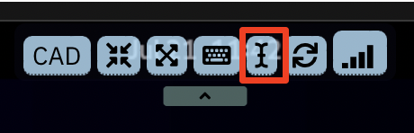
a. Copy the text from the lab guide that you want to paste into the lab environment.
b. Open a terminal window, or a text editor or a web browser in the VM Desktop where you want to copy the text to.
c. Click the Send Text icon in the VM Desktop tool bar, paste the text into its window, then again click Send Text to send the text to an open command shell and close its window.

The text is now copied to the terminal window, or the text editor or the web browser you opened in the previous step.

Execute Lab Tasks
1 Create the required working directories
-
Double-click the terminal icon to open a terminal window.

-
Create a Student directory and some sub-directories used in the lab with commands:
mkdir ~/Student mkdir ~/Student/dev mkdir ~/Student/ops mkdir ~/Student/assets
2 Develop a Liberty web application
The objective of this section is to develop a simple web application for Liberty. You will use a Liberty starter application to now start from scratch and use Visual Studio Code and Liberty Tools to build the application.
2.1 Create a starter app project.
In this scenario, you want to create a Jakarta EE 10 Web application with the name simpleweb and will use maven to build it. The fastest way to get started is to use an Open Liberty starter application which generates a project with the maven configuration as well as a basic Liberty setup.

The Open Liberty starter gives you a simple, quick way to get the necessary files to start building an application on Open Liberty. There is no need to search how to find out what to add to your maven or gradle build files. A simple RestApplication.java file is generated for you to start creating a REST based application. A server.xml configuration file is provided with the necessary features for the MicroProfile and Jakarta EE versions that you previously selected.
-
Click the Activties button.
-
Open a browser window by double-clicking on Activities and then select the Firefox browser icon.

If you get a pop-up that Authentication is required, enter IBMDem0s!.
-
Type the URL as: https://openliberty.io/start/ and press Enter.
-
Change the artifact name to simpleweb, change the Java level to 17 and leave the rest as is, then click Generate project
The project zip file is saved under the Downloads directory.
-
You will see a pop-up like the one below. Click Got it! to close the window.
-
Extract the file.
a. Click Activities and switch to the terminal window.
b. Move the starter project to the developer directory and extract it with commands:
mv ~/Downloads/simpleweb.zip ~/Student/dev unzip ~/Student/dev/simpleweb.zip -d ~/Student/dev/simpleweb
The project has been created under the ~/Student/dev/simpleweb directory.
c. List the content via following command:
ls -lrt ~/Student/dev/simpleweb
2.2 Inspect the starter project using Open Visual Studio Code
Now you will use Visual Studio Code to see what has been generated as part of the starter project.
-
From the terminal window, start Visual Studio Code.
cd ~/Student/dev/simpleweb/ code .Visual Studio Code UI will be opened.
-
Click on Yes, I trust the authors to continue.

If you see during the lab one of the pop-ups below or any other pop-up asking to install something, close the pop-up without installation by clicking the X.


-
Investigate into the generated project:
In Visual Studio Code, take a look at the Explorer section to see the content of the project. You can find a src and a target folder, a Dockerfile and a maven build file (pom.xml).

-
Take a look at the generated Maven configuration
a. Click pom.xml to see the maven pom. In the build section, you can find the configuration of the liberty-maven-plugin.
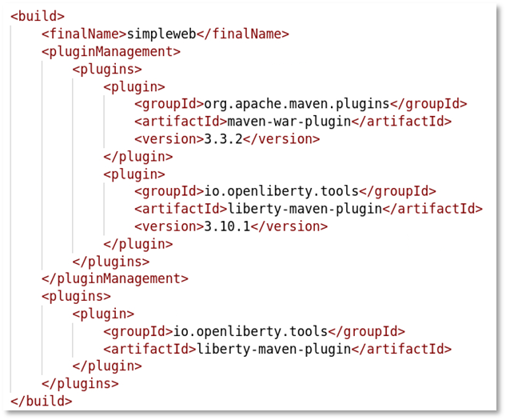
Don’t worry if the version of the plugin has changed to 3.10.2 or later.
b. Finally close the pom.xml file.
-
Review the generated Liberty configuration
a. Open src > main >liberty > config > server.xml to see the Liberty configuration.
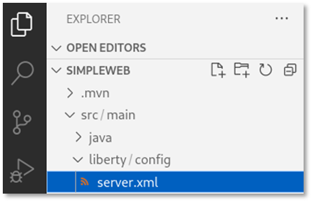
As you can see, the features for jakartaee-10 and MicroProfile-6.1 have been configured.

b. Scroll down and you can see that the http endpoint and the web application have been configured.
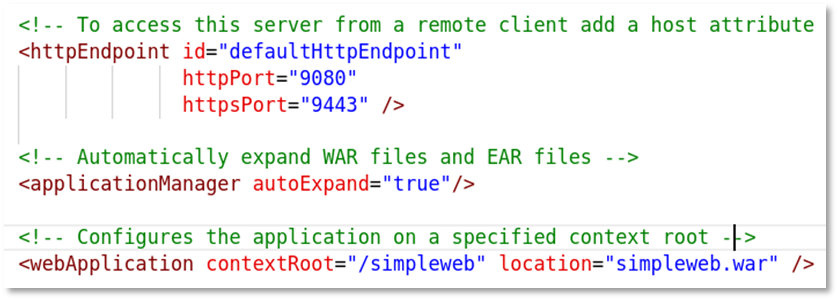
2.3 Adjust the Liberty configuration
The simpleweb application will not require the full Jakarta EE 10 standard but only the servlet specification.
As best practice to optimize the footprint of the application runtime regarding memory and disk space and limit the number of potential vulnerabilities, you should define only the features that are required by the application. In this case, you are ging to replace the jakartaee-10 feature with an appropriate servlet feature.
-
In the Visual Studio Code editor for server.xml, scroll up to the feature section.
-
Delete the lines \
jakartaee-10.0\ and \< feature>MicroProfile-6.1\. Your featureManager section should now look like this:
-
Now you will use the Liberty configuration assistant to define the servlet feature. Place your cursor at the beginning of an empty line in the featureManager section. Then press the CTRL key and press SPACE to activate the configuration assistant. You should see something like:
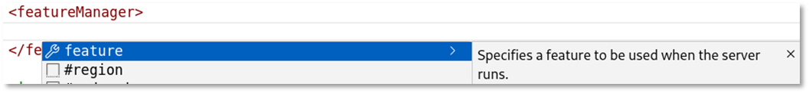
You might have to click on the arrow right to feature to get the description.
-
Select feature and the feature element gets added.

-
Use again CTRL+SPACE to get the list of available features.
-
Type the word servlet to see the available servlet features.
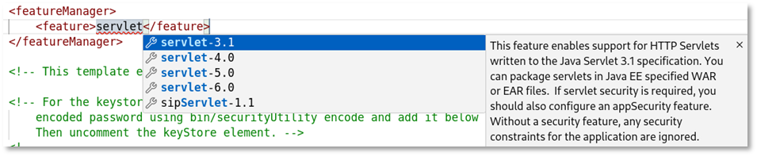
-
Use the arrow-down key to get the description for servlet-6.0.

-
Select the feature servlet-6.0 and your configuration should now look like this:

-
For this part of the lab, you do not need to define a keystore or the basic registry, so you need to delete the generated entries. Your configuration should now look like this:

-
Save the configuration by using CTRL+S.
-
Close the server.xml file.
2.4 Using Liberty Dev Mode
Liberty development mode, or dev mode, allows you to develop applications with any text editor or IDE by providing hot reload and deployment, on demand testing, and debugger support. Liberty Dev Mode is enabled through Maven and Gradle projects.
Your code is automatically compiled and deployed to your running server, making it easy to iterate on your changes.
You can run tests on demand or even automatically so that you can get immediate feedback on your changes. You can also attach a debugger at any time to debug your running application.

You can use the capabilities of Liberty dev mode inside and outside of an IDE. This provides you the flexibility of choice. In a terminal window, you would use Liberty in dev mode with maven using the command mvn liberty:dev or mvn liberty:devc if you want to develop in a container.
In the lab environment, the Liberty tools plugin has been installed into Visual Studio Code. Therefore you will use the integrated Liberty dashboard instead.
-
In Visual Studio Code, expand the Liberty Dashboard.

-
Right-click on simpleweb and then start to start the server in dev mode.

-
A terminal opens within Visual Studio Code and you can see that the start of the build process gets triggered.

-
The Liberty plugin as well as the Liberty server artifacts get downloaded, then the server is ready for testing.

-
Switch to the browser window and enter the URL localhost:9080. You should see something like this:
If you get a pop-up with Authentication required, enter the password IBMDem0s! and click on Unlock.
Now, let’s edit the simpleweb application.
2.5 Edit the simpleweb application
Now you will edit the simpleweb application which only consists of a servlet. Thanks to Liberty code assistant, you don't have to write the code on your own.
-
Switch to Visual Studio Code.
-
In Visual Studio Code, expand the path to src/main/java/com/demo/rest, then right-click on demo and select New File.

-
Enter the name helloWorldServlet.java and press ENTER.

-
The file src/main/java/com/demo/helloWorldServlet.java is generated and opens in an editor.
-
Remove all code from the file. Then enter servlet.
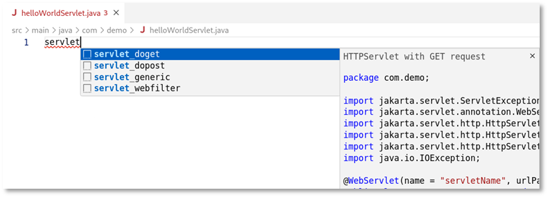
The code assistant window is shown.
If you do not see the code assistant window, enter CTRL+Space to activate it.
-
The code assistant offers some servlet methods for Jakarta EE. Select servlet_doget, and the required starter code gets generated. As you can see, the fields that should be changed are highlighted.

-
Change the servletName to helloWorldServlet and the urlPatters to /helloWorld. The code should now look like this:

-
Press CTRL+S to save the code change. Take a look at the terminal output. As Liberty has been started in DevMode, the code changes are picked up automatically, the source gets compiled and Liberty gets updated.

-
Switch to the browser and open the URL localhost:9080/simpleweb/helloWorld. You should see the output of the created servlet.

-
Switch back to Visual Studio Code and change the source code of the servlet response text to something like this: helloWorld - Example HTTP GET request for HTTPServlet

-
Save the changes and reload the page in the browser. The output should be updated.

-
Switch back to Visual Studio Code and close the editor for the file helloWorldServlet.java.
Final step as a developer is to export the developed application as WAR file so that it can be used in the next part of the lab.
2.6 Export the developed application as WAR file
Export the developed application so that it can be deployed to Liberty by the operations team.
The generated maven pom by default does not generate a WAR file as it uses a “looseApplication” approach to optimize the inner-loop development experience. (For more details, see https://github.com/OpenLiberty/ci.maven). To change the default build behaviour, you need to adjust the pom.xml file and configure the Liberty maven plugin to generate a WAR by setting the property: \
-
Switch back to Visual Studio Code.
-
In the Liberty dashboard, right-click on the simpleweb application and select Stop (or use CTRL+C on the terminal window instead).
-
Verify in the terminal that Liberty has been stopped.
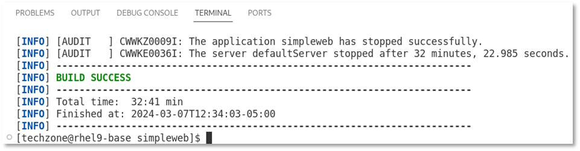
-
In Visual Studio Code, open the file pom.xml and add to the Liberty plugin configuration the lines:
<configuration> <looseApplication>false</looseApplication> </configuration> -
If you would start Liberty now again in Dev Mode, the property looseApplication would be ignored and you would see a warning like this:

Therefore, you must start Liberty in run mode to generate the WAR file. This can be done by entering in the terminal window the command:
mvn liberty:run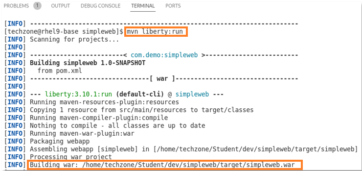
As you can see in the screenshot above, maven has built the file simpleweb.war and stored it at the ~/Student/dev/simpleweb/target/ directory.
-
Scroll down and you can see that it has been installed into the directory ~/Student/dev/simpleweb/target/liberty/wlp/usr/servers/defaultServer/apps.

-
Feel free to test the application in the browser, then stop the Liberty instance by using CTRL+C.
-
Close Visual Studio Code.
2.7 Create a server package
For the next lab, you will need the WAR file as well as the server.xml which can be found in the created Liberty instance at: ~/Student/dev/simpleweb/target/liberty/wlp/usr/servers/defaultServer.
More complex applications also depend on other files like utility jars, additional Liberty configuration files and JDBC drivers for example.
So instead of copying the files one by one, you could create a server package that contains all files.
What is a server package? A server package can contain only the user directory or the full application server.
The syntax of the server package command is:
server package server_name --archive=package_file_name.jar --include=all
With the option --include=all, the Liberty binaries as well as the usr directory get packaged.
For more details and options, see https://www.ibm.com/docs/en/was-liberty/base?topic=line-packaging-liberty-server-from-command.
-
To create the server package, execute the following command:
~/Student/dev/simpleweb/target/liberty/wlp/bin/server package defaultServer --archive=simpleweb-serverpackage.jar --include=all
-
To hand over the server package to the ops team, use the following commands:
cp ~/Student/dev/simpleweb/target/liberty/wlp/usr/servers/defaultServer/simpleweb-serverpackage.jar ~/Student/assets
2.8 Recap
Congratulations, you have finished the application development part.
Let’s recap what you did so far.
You acted as a developer and used Visual Studio Code and the Liberty Tools for these tasks:
- generated a Liberty starter project including the required maven and Liberty configuration.
- used the Liberty Tools configuration assistant to adjust the Liberty configuration.
- used Liberty Dev Mode for inner-loop development.
- updated the simpleweb application using the Jakarta EE code assistant.
- exported the web application as WAR file.
- created a server package including application and Liberty binaries.
Useful links: https://github.com/OpenLiberty/liberty-tools-vscode/blob/HEAD/docs/user-guide.md
3. Liberty operations
Now you will work with Liberty from an operational point of view. Development has handed over a Liberty server package to you. The server package contains all necessary configuration to run the application called simpleweb. The provided server package is typically not production-ready, as it is likely not portable between stages and does not fulfill the requirements regarding security and so on.
In this part of the lab, you will explore how to create configuration snippets and how to administer Liberty from the command line. But first you will explore the server package and get an understanding about dynamic updates.
3.1 Explore the server package
You will now explore the Liberty server package to get a better understanding how to use it, in addition you will use it to learn more about Liberty administration from the command line and Liberty dynamic updates.
|
In this section, you will use the server run command instead of the server start command. This will allow you to see the logs immediately instead of having to use a tail command. It will also allow you to stop the Liberty server via CTRL+C |
3.1.1 Extract Liberty package from command line
-
Extract the Liberty server package and try to run it. When asked, enter test as target directory.
cd ~/Student/ops/ java -jar ~/Student/assets/simpleweb-serverpackage.jar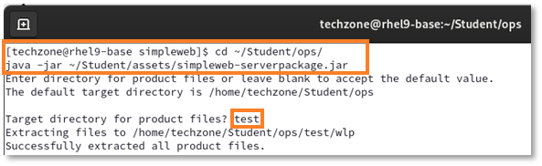
The directory test/wlp got created and contains the configured Liberty instance including application.
-
Run the following command to get the Liberty version:
test/wlp/bin/productInfo version
-
Run the following command to list the Liberty features that have been installed:
test/wlp/bin/productInfo featureInfoAs you can see, the server package provided by the developer only contains the servlet-6.0 features which is the only feature required by the application.
-
Run the following command to get the list of defined Liberty application servers:
test/wlp/bin/server list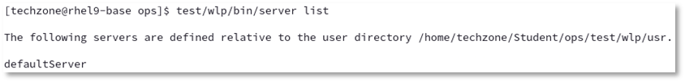
-
Start the Liberty server instance by running the command:
test/wlp/bin/server start defaultServer
This runs the server in the background and the output is written to files in the test/wlp/bin/servers/defaultServer/logs directory.
To start the server in the foreground (so the console messages are displayed in the command window) you would use the command
test/wlp/bin/server run defaultServer.You will use this command later in the lab.
-
View the Liberty server’s messages.log file to see the server startup messages via the command:
cat test/wlp/usr/servers/defaultServer/logs/messages.log
At the beginning of the log, you can see that Open Liberty version is used. The server is started when the message “The defaultServer server is ready to run a smarter planet” is displayed in the messages.log file.
-
Test that the application is accessible via URL http://localhost:9080/simpleweb/helloWorld

3.1.2 Liberty dynamic updates
Let’s do a short excurse about Liberty dynamic updates. You will use Visual Studio Code to perform some minor configuration changes. For this part of the lab, you could instead also use a simple text editor like vi or gedit instead.
-
Open Visual Studio Code.
cd ~/Student/ops/test code .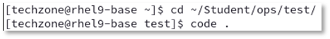
-
Visual Studio Code opens. Click on Yes, if you are asked to trust the author.
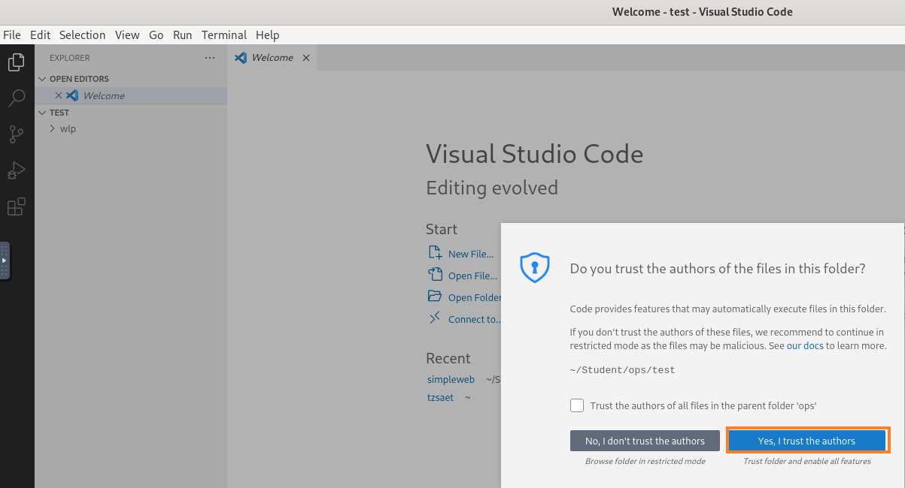
-
In Visual Studio Code, open a terminal window
-
In the terminal, use the tail command to display the Liberty message log.
tail -f wlp/usr/servers/defaultServer/logs/messages.log
-
In Visual Studio Code, navigate to wlp > usr > servers > defaultServer and open the file server.xml.

-
In the server.xml file, change the httpPort setting from port 9080 to port 9081.
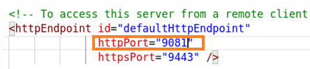
You can see in the terminal that the change is picked up and Liberty listens now on port 9081.

-
Change the webApplication contextRoot setting from “/simpleweb” to “/mysimpleweb”.
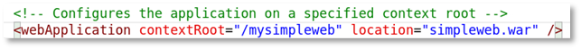
You can see in the log that the change is picked up.

-
Switch to the browser and access the application via URL localhost:9081/mysimpleweb/helloWorld.

As you have seen, you can change the Liberty configuration without having to restart the server. You will explore this further later in the lab when you dynamically update the logging for example. Now let's stop the server.
-
In the terminal, press CTRL+C to stop the tail command.
-
Stop the Liberty instance by executing in the terminal the command:
wlp/bin/server stop defaultServer
3.2 Create Liberty configuration snippets
There are different ways to create a Liberty server configuration and there are often different roles involved to get the final configuration for production. The application specific configuration, for example, is typically created by the application developer while security related configuration is typically done by operations. Operations is typically also responsible to make the configuration portable across stages, configure logging and so on.
You could create Liberty configuration snippets by copying over the related snippets from the product documentation and adjust them in a normal text editor. In this part of the lab, you will see that the Liberty tools plugin in Visual Studio Code can help you to speed up the create of configuration snippets as it provides configuration assistance including documentation. Let’s get started.
You will now modify the file server.xml which has been provided as part of the server package to make it more portable and re-usable.
-
In Visual Studio Code, open the file server.xml if you closed it previously.
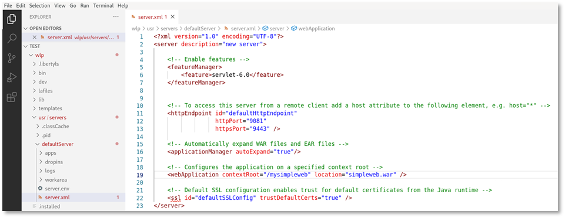
-
Take a look at the httpEndpoint element.

As mentioned in the comment, the httpEndpoint is by default not accessible from a remote client. This is good from security point of view and works fine if the client is local to the server. But if you, for example, use a remote load balancer or a remote HTTP server, this will not work. So there will be likely situations where you want to allow access to the application from a remote client and you must add a host attribute. You will use the Liberty Tools configuration assistant to do this.
-
Place the cursor at the end of the line <httpEndpoint id="defaultHttpEndpoint" and press ENTER to add another line.
In the new line, press CTRL+SPACE to see the available attributes.
Use the arrow-down key and navigate to the host attribute to see the description of the attribute.
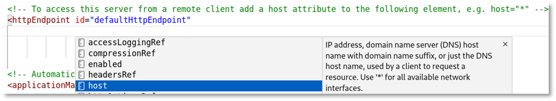
-
Select host and your configuration should look like this:

As you can see, the attribute host defaults to localhost.
3.2.1 Use variables for portability
To make the configuration portable, you will replace the fixed values for ports and host with Liberty variables. Liberty variables can be defined with a default value and overridden from inside or outside Liberty. To show the concept, you will adjust the httpEndpoint settings.
You could use the configuration snippet below to replace the existing httpEndpoint configuration with a portable configuration.
<httpEndpoint id="defaultHttpEndpoint"
host="${httpEndpoint_host}"
httpPort="${httpEndpoint_port}"
httpsPort="${httpEndpoint_secure_port}" />
<variable name="httpEndpoint_host" defaultValue="*"/>
<variable name="httpEndpoint_port" defaultValue="9080"/>
<variable name="httpEndpoint_secure_port" defaultValue="9443"/>
Instead you will use the Liberty configuration assistant to get an understanding how you could create such a configuration snippet.
-
Place the cursor in an empty line under the httpEndpoint section, then enter var and press CTRL+SPACE.

-
Select variable, then enter as name "httpEndpoint_port".

-
Place the cursor after name="httpEndpoint_port", enter a SPACE and press CTRL+SPACE.

-
Select defaultValue and enter as value 9080.

-
Use copy and paste to create two additional variables:
- one with the name "httpEndpoint_secure_port" and the default value "9443"
- the other one with the name "httpEndpoint_host" and the value "*".
Your configuration should now look like this:

-
Switch to the httpEndpoint section, remove for the attribute host the value "localhost", enter ${ht and press CTRL+SPACE.
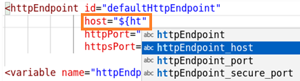
As you can see, the variable names are offered.
-
Select "httpEndpoint_host", then enter "}". Your configuration should look like this:

-
Do the same kind of change for the attributes httpPort and httpsPort.
Your final httpEndpoint configuration should now look like this:
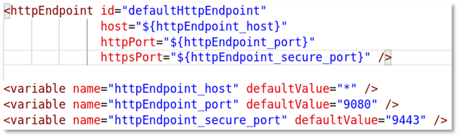
-
Save your changes.
Your server.xml file should now look like this:
<?xml version="1.0" encoding="UTF-8"?> <server description="new server"> <!-- Enable features --> <featureManager> <feature>servlet-6.0</feature> </featureManager> <!-- To access this server from a remote client add a host attribute to the following element, e.g. host="*" --> <httpEndpoint id="defaultHttpEndpoint" host="${httpEndpoint_host}" httpPort="${httpEndpoint_port}" httpsPort="${httpEndpoint_secure_port}" /> <variable name="httpEndpoint_host" defaultValue="*"/> <variable name="httpEndpoint_port" defaultValue="9080"/> <variable name="httpEndpoint_secure_port" defaultValue="9443"/> <!-- Automatically expand WAR files and EAR files --> <applicationManager autoExpand="true"/> <!-- Configures the application on a specified context root --> <webApplication contextRoot="/mysimpleweb" location="simpleweb.war" /> <!-- Default SSL configuration enables trust for default certificates from the Java runtime --> <ssl id="defaultSSLConfig" trustDefaultCerts="true" /> </server>Now let's test if the Liberty configuration is really portable.
-
From the Visual Studio Code terminal, start the Liberty server instance via the following command:
wlp/bin/server run defaultServer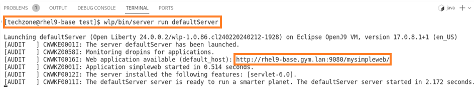
As you can see, the Liberty server gets started and listens on port 9080.
-
Press CTRL+C to stop the server.
-
Set the httpEnpoint_port value in the Operating System environment variable and start the Liberty server again.
export httpEndpoint_port=9081 wlp/bin/server run defaultServer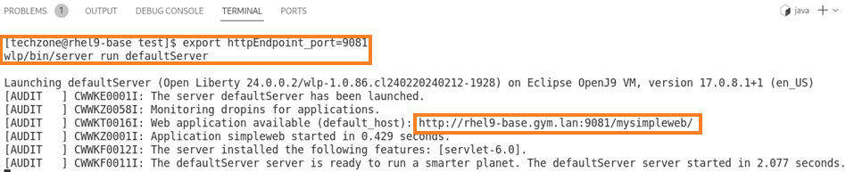
As you can see, the Liberty server now listens on port 9081, which shows that you can now override from outside Liberty the default settings defined in the Liberty server.xml file. In a Kubernetes environment, you could for example use a config map to change configuration settings.
-
Press CTRL+C to stop the server. Then unset the operating system variable by the following command:
unset httpEndpoint_portThis will restore the httpEnpoint_port value in the Operating System environment variable to 9080.
3.2.2 Use includes for better re-use and visibility
If you configure a Liberty server with resources like datasources or JMS queues, user registry and more, your configureation file can get quite long and not easy to be read and maintained. Liberty allows to specify configuration resources to get included into the server configuration. This helps to keep control over the configuration, provides better reuse of the different configuration and allows to split the responsibility for the configuration between different teams. The developer for example could create the application specific configuration and operations the security configuration.
You will now use includes to structure the server configuration.
-
In the terminal in Visual Studio Code, copy the existing server.xml file into a new file called application-config.xml.
cp wlp/usr/servers/defaultServer/server.xml wlp/usr/servers/defaultServer/application-config.xml -
Open the newly created file application-config.xml in Visual Studio Code.

-
Remove all configuration inside the server section other than the definition of the webApplication element. Your application-config.xml should look like this:
-
Save the changes, then close the application-config.xml file.
-
Switch to the server.xml file. Delete the webApplication element, then enter include and press CTRL+SPACE.
The Liberty configuration assistant shows you the available elements.

-
Select include and the element gets generated. As value for location, enter "application-config.xml".
-
As the owner of the server.xml file, you might want to decide what happens if the file to be included does not exist or contains conflicting configuration settings.
Go to the end of the include statement and press CTRL+SPACE. The available attributes for the include element are displayed.

As you can see, you could define the include file as optional, so Liberty would not throw an error if the include file is missing.
-
Click on onConflict to see the available attributes for that options.

If you want to make sure, that settings in the server.xml cannot be overridden by included files, select IGNORE, otherwise use MERGE or REPLACE.
-
Click on MERGE and your include statement should look like this:
<include location="application-config.xml" onConflict="MERGE"/>
You can configure multiple include files, for example one file for security-config.xml and another one for resource specific configuration settings like for databases or JMS. Now let's test if the include works.
-
Save the server.xml file.
-
From the Visual Studio Code terminal, start the Liberty server instance via the following command:
wlp/bin/server run defaultServerAs you can see, the include has been found and processed, so that the application is started.

Keep the server running as we need it in the next section.
3.2.3 Enable transport security
Right now, you are not able to access Liberty via HTTPS. While the HTTPS port 9443 has been defined, SSL has not been enabled in Liberty. SSL can be enabled using the transport security feature. So the next step is to enable transport security and take a look at other related topics like keystores.
-
In the file server.xml, navigate the to featureManager section.
-
Add the feature transportSecurity-1.0 to the featureManager section by add the line:
<feature>transportSecurity-1.0</feature>Alternatively, you can use the configuration assistant to enable it.
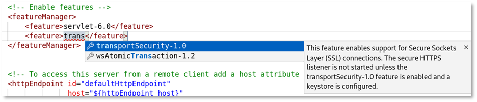
-
Take a look at the logs and you can see that the feature is not available yet.

This is due to the fact that the Liberty server package generated by the developer only includes the required features (features that have been defined in the server configuration file). You will use the Liberty featureUtility tool to install the missing feature. The feature could be downloaded from a local repository if configured, in this case you will download it from a central maven repository.
-
In the terminal window, stop the Liberty instance by pressing CTRL+C.
Then execute the following command to install the missing feature from the maven repository:
wlp/bin/featureUtility installFeature transportSecurity-1.0
-
Then start the Liberty instance again by running the following command:
wlp/bin/server run defaultServer
As you can see, Liberty created a certificate and placed it into the SSL key file "wlp/usr/servers/defaultServer/resources/security/key.p12".
-
Liberty used the variable keystore_password to secure the keystore. As you did not define a value for the variable keystore_password, Liberty generated a password and stored it in the server.env file. In Visual Studio, open the server.env file to see the keystore password. Your password will likely look different as it has been generated randomly.

Close the server.env file.
-
To make it more visible where the keystore password comes from, add the following definition to the server.xml file:
<keyStore id="defaultKeyStore" password="${keystore_password}" />The keyStore element also allows you to specify a different keystore location and much more.
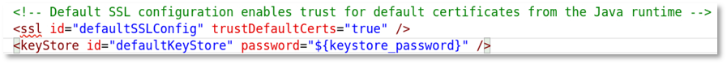
-
Review your configuration in server.xml. It should look like this:
<?xml version="1.0" encoding="UTF-8"?> <server description="new server"> <!-- Enable features --> <featureManager> <feature>servlet-6.0</feature> <feature>transportSecurity-1.0</feature> </featureManager> <!-- To access this server from a remote client add a host attribute to the following element, e.g. host="*" --> <httpEndpoint id="defaultHttpEndpoint" host="${httpEndpoint_host}" httpPort="${httpEndpoint_port}" httpsPort="${httpEndpoint_secure_port}" /> <variable name="httpEndpoint_host" defaultValue="*"/> <variable name="httpEndpoint_port" defaultValue="9080"/> <variable name="httpEndpoint_secure_port" defaultValue="9443"/> <!-- Automatically expand WAR files and EAR files --> <applicationManager autoExpand="true"/> <!-- Configures the application on a specified context root --> <include location="application-config.xml" onConflict="MERGE"/> <!-- Default SSL configuration enables trust for default certificates from the Java runtime --> <ssl id="defaultSSLConfig" trustDefaultCerts="true" /> <keyStore id="defaultKeyStore" password="${keystore_password}" /> </server> -
Now let's see if the application is accessible via HTTPS.
Switch to the browser and access Liberty via https://localhost:9443/mysimpleweb/helloWorld.
You should get a security warning like this:

-
Click on Advanced, then scroll down and click on "Accept the Risk and Continue".
-
You should see the output of the web application.
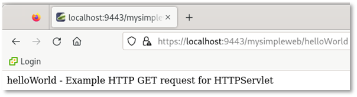
-
Switch back to Visual Studio Code and stop the running Liberty instance by entering CTRL+C in the terminal window.
-
Close Visual Studio Code.
3.2.4 Backup the generated files
You will re-use the generated configuration snippets and other assets in the next section of the lab. Therefore it is a good approach to create a snippet repository. Configuration snippets are typically hosted in a git repository or so, here you will use the folder ~/Student/assets. You will also use the asset directory to store the application WAR file.
-
Copy the generated configuration files as well as the application war file into the assets directory.
cp ~/Student/ops/test/wlp/usr/servers/defaultServer/server.* ~/Student/assets cp ~/Student/ops/test/wlp/usr/servers/defaultServer/application-config.xml ~/Student/assets cp ~/Student/ops/test/wlp/usr/servers/defaultServer/apps/simpleweb.war ~/Student/assets -
Verify that the assets directory contains the application WAR as well as the configuration files. It also contains the server package but this is no longer required.
ls ~/Student/assets
3.2.5 Recap
In this section of the lab, you got an impression how to create and use configuration snippets:
- used the Liberty Tools configuration assistant to create configuration snippets and to configure Liberty.
- used the Liberty featureUtility tool to install missing features.
- learned how to use variables to make the configuration more portable.
- learned how to use includes to split the configuration into multiple re-usable files.
- created a security configuration.
Comments:
- Instead of using the Liberty Tools configuration assistant in Visual Studio Code, you could also use the product documentation and copy & paste to create Liberty configuration snippets.
- You could also use the IBM migration tools to transform an existing configuration for WebSphere Traditional and other runtimes into a Liberty configuration.
4. Liberty Administration
Now let’s switch to the Liberty Admistrator role and explor how to install and configure Liberty from an administrator point of view.
A traditional administrator typically downloads the application server binaries from the IBM pages and uses a regular editor instead of an IDE like Visual Studio to configure Liberty. To download the latest version of WebSphere Liberty, the administrator can use the IBM support page: https://www.ibm.com/support/pages/recommended-updates-websphere-application-server.
4.1 Install Liberty from scratch
The best practice for Liberty installation is to create a minimal installation by using the Liberty kernel image and install only the required features on top of it. The latest WebSphere Liberty kernel image could be downloaded from the IBM support page. For simplicity, we will use the International License Agreement for Non-Warranted Programs (ILAN) package which is available as zip file at: https://public.dhe.ibm.com/ibmdl/export/pub/software/websphere/wasdev/downloads/wlp/24.0.0.1/wlp-kernel-24.0.0.1.zip
-
Open a new terminal window.
-
Create a directory to store the Liberty package.
mkdir ~/Student/ops/software
-
Download and store the Liberty kernel image.
wget https://public.dhe.ibm.com/ibmdl/export/pub/software/websphere/wasdev/downloads/wlp/24.0.0.1/wlp-kernel-24.0.0.1.zip -P ~/Student/ops/software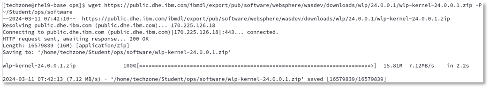
-
Use ls command to see that the kernel image is less than 17 MB in size. The overall disk footprint will be larger depending on the required Liberty features.
ls -lrt ~/Student/ops/software/
-
Create a directory for the integration environment. This will be used for the Liberty installation.
mkdir ~/Student/ops/int cd ~/Student/ops/int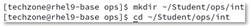
-
Use the unzip command to extract the image.
unzip ../software/wlp-kernel-24.0.0.1.zip
On the IBM support page, you can find next to the convenience packages like the Liberty kernel package also Liberty archives for Liberty Core, Liberty Base or Liberty ND. To install such an archive, you would use a command like: "java -jar ../wlp-base-all-24.0.0.1.jar --acceptLicense ."
-
Get the Liberty version by running the following command:
wlp/bin/productInfo version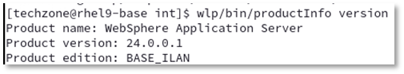
As you can see, this is an ILAN package which can be used for evaluation as well as for production.
-
Get the list of Liberty features that are part of the installation:
wlp/bin/productInfo featureInfo
As you can see, no feature is included in the kernel image.
Now that Liberty has been installed, the next step is to create a Liberty server instance.
As you have seen, the installation of Liberty is basically an unzip.
If you want to update Liberty later on, you can either apply a jar file or simply replace the binaries.
4.2 Introducing Liberty Environment Variable Configuration
You can customize the Liberty environment using certain specific variables to support the placement of product binaries and shared resources. The Liberty environment variables are specified using server.env file. You can use server.env file at the installation and server levels to specify environment variables such as JAVA_HOME, WLP_USER_DIR and WLP_OUTPUT_DIR.
Here some of the Liberty specific variables can be used to customize the Liberty environment: (see also https://www.ibm.com/docs/en/was-liberty/nd?topic=liberty-customizing-environment)
- ${wlp.install.dir} - This configuration variable has an inferred location. The installation directory is always set to the parent of the directory containing the launch script or the parent of the /lib directory containing the target jar files.
- JVM_ARGS - This environment variable can be used to specify a list of command-line options, such as system properties or -X parameters, that are passed to the JVM when the server starts. Any values that contain spaces must be enclosed in quotes.
- WLP_USER_DIR - This environment variable can be used to specify an alternative location for wlp.user.dir. This variable must be an absolute path. If this variable is specified, the runtime environment looks for shared resources and server definitions in the specified directory. WLP_USER_DIR can be specified only in the ${wlp.install.dir}/etc/server.env file because the purpose of this variable is to specify where the remaining configuration is located. After the remaining configuration is found and merged, no further configuration in a different location is expected, or supported
- WLP_OUTPUT_DIR - This environment variable can be used to specify an alternative location for server generated output such as logs, the workarea directory, and generated files. Files in the logs directory can include console.log, messages.log, and any generated FFDC files. Generated files can include server dumps that are created with the server dump or server javadump command. This variable must be an absolute path.
4.3 Create a Liberty server instance
The Liberty server command supports actions for starting, stopping, creating, packaging, and dumping a Liberty server. The server create command creates a new Liberty server with the name specified. Additional detail on the server command can be found here: https://www.ibm.com/docs/en/was-liberty/base?topic=line-server-command-options
The server create command creates by default the user directory in a sub-directory of the \${wlp.install.dir} directory. In production, it is recommended to store the Liberty configuration in a separate directory. This can be done by setting the WLP_USER_DIR environment variable.
-
The etc directory as well as the server.env file are not created as part of the installation.
Use the following commands to set the variable WLP_USER_DIR to /home/techzone/Student/ops/int/wlp_usr in the server.env on runtime level.
(Keep in mind that the path in server.env must be absolute, ~/Student, for example is not supported):mkdir ~/Student/ops/int/wlp/etc echo "WLP_USER_DIR=/home/techzone/Student/ops/int/wlp_usr" > ~/Student/ops/int/wlp/etc/server.env cat ~/Student/ops/int/wlp/etc/server.env
-
Run the following commands to create a new server named "myServer":
wlp/bin/server create myServer
The new server is created in the following directory: wlp_usr/servers/myServer.
-
Run the following command to verify the name and the path of the server instance:
wlp/bin/server list
-
Run the following command to list the files and directories that have been created for myServer:
ls -lrt wlp_usr/servers/myServer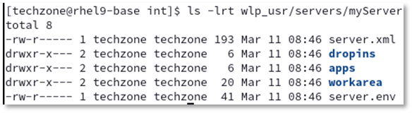
-
Replace the generated Liberty configuration with the configuration that you stored in the assets directory.
cp ~/Student/assets/server.* wlp_usr/servers/myServer ls -lrt wlp_usr/servers/myServer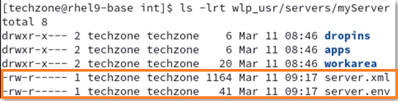
In the Liberty setup, you now have a server.env file on two levels:
- on runtime level at ${wlp.install.dir}/etc/server.env and
- on server level at ${server.config.dir}/server.env.
If both files are present, the contents of the two files are merged; values in the server-level file take precedence over values in the runtime-level file. -
Verify that the pre-defined HTTP settings fit to your environment:
cat wlp_usr/servers/myServer/server.xml | grep http
If you want to change those port values, you could define them in the server.env file or bootstrap.properties file for example.
Alternatively you could define the related variable on the operating system level.
4.4 Install required features
You installed the Liberty kernel package which does not contain any features. The next step is to install the required features. Instead of looking into the Liberty configuration to determine which features are required, you can let Liberty inspect which features are missing. This can be done using the featureUtility and specifying the server you are looking for. The command by default will download the required features from the online repository. In an air-gapped environment, you could download the feature repository from the IBM support page and then specify in the featureUtility command to use a local repository.
-
To download and install the required features, use the following command:
wlp/bin/featureUtility installServerFeatures myServer
As you can see, the command detected that the features for servlet-6.0 and transportSecurity-1.0 were missing. It also downloads the feature ssl-1.0 as transportSecurity-1.0 depends on it.
-
Verify that the Liberty features have been installed by using the following command:
wlp/bin/productInfo featureInfo
4.5 Use your own keystore
If you do not create a keystore but enable SSL, Liberty will create a keystore with a random password. Now, you will create your own keystore with a password of choice.
-
Run the following command to create a keystore
wlp/bin/securityUtility createSSLCertificate --server=myServer --password=mySecretAs you can see, the command uses the hostname and server name as subjectDN and encodes the password using xor. The command also allows to use aes encoding or encryption, see https://www.ibm.com/docs/en/was-liberty/base?topic=applications-securityutility-command.
-
Our server template has already configured SSL and uses a variable to specify the keystore password. Use the following commands to review what has been configured in the server.xml file:
cat wlp_usr/servers/myServer/server.xml | grep trans cat wlp_usr/servers/myServer/server.xml | grep keystore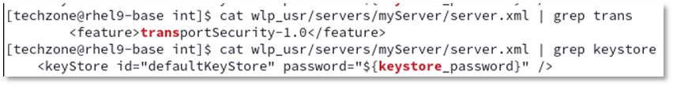
-
The keystore password has been configured in the server.env file. Use the following command for review the settings:
cat wlp_usr/servers/myServer/server.env;echo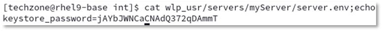
As expected, the password used for the keystore does not match to the one in server.env and must be updated.
-
Best practice is to store the password encoded or encrypted. In this case, you will use encoding via aes and store the password in the server.env file. To generate the encoded password, you can use the securityUtility encode command. Use the following command to update the server.env file with the encoded keystore password of “mySecret”, then review the result:
echo "keystore_password=$(wlp/bin/securityUtility encode --encoding=aes mySecret)" > wlp_usr/servers/myServer/server.env cat wlp_usr/servers/myServer/server.envThe encoded keystore password is not unique, so you might have a different password as in the screenshot above.
But as long as you use the same password to be encoded, all of the different resulting strings are valid.
4.6 Verify that the server configuration works:
-
Start the server via the following command:
wlp/bin/server start myServer tail -f wlp_usr/servers/myServer/logs/messages.log
As you can see, the Liberty server is running and listens on port 9080 and 9443. You can also see that it complains about the missing include file application-config.xml. You will fix this later.
-
Verify that the server is accessible via HTTPs. Switch to the browser and access the web application via the URL https://localhost:9443.
As before, you will get a warning that your connection is not secure. Click on Advanced, scroll down and click on "Accept the Risk and Continue". Then you should be able to access the application.
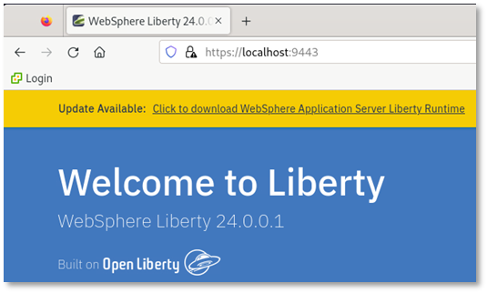
-
Switch back to the terminal window and press CTRL+C in the terminal window to stop the tail command.
-
Stop the server via the following command:
wlp/bin/server stop myServer
4.7 Deploying a sample application to Liberty
In the first part of this lab, you used the Liberty Tools to develop an application and configure Liberty. The application got deployed via maven under the cover. Then you used the Liberty server package which already included the deployed application. In this section of the lab, you will deploy an application to Liberty using two different techniques.
First, you will simply copy the application WAR module into the Liberty "dropins" directory. The dropins directory is monitored by Liberty. As deployable units (WAR, EAR, JAR) are added to the directory, Liberty automatically deploys and starts the application on the Liberty server. The dropins directory can be used for applications that do not require extra configuration like security role mapping. As the deployable units are removed from the dropins folder, the applications are stopped and removed from the running Liberty server.
-
In the terminal window start the server and use the tail -f command to view the messages.log file.
wlp/bin/server start myServer tail -f wlp_usr/servers/myServer/logs/messages.log -
Right-click on Terminal and select New Window to open a second terminal window.
-
In the new Terminal window, navigate to the int directory:
cd ~/Student/ops/int/ -
Copy the web application into the dropins directory.
cp ~/Student/assets/simpleweb.war wlp_usr/servers/myServer/dropins
-
Switch to the terminal window where tail command is running. You can see messages that the application deployment has taken place, the application simpleweb application has been started and is available at http://rhel9.techxchange.local:9080/simpleweb/.
Be aware that Liberty defined the context root based on the name of the WAR file as "/simpleweb".
-
Verify that the application is accessible by opening a browser at: http://localhost:9080/simpleweb/helloWorld

-
In the terminal window where tail is running, you can see that the application has been accessed.

-
Switch back to the terminal where you entered the copy command and remove the deployed application from the dropins directory using the following command:
rm wlp_usr/servers/myServer/dropins/simpleweb.war -
Switch back to the terminal window where tail is running. You can see that the application has been removed.
While the dropins directory can be used for applications that do not require extra configuration, deploying the application by adding it to the Liberty server configuration provides the freedom to configure the Liberty server based on the application configuration requirements.
Now you will deploy the simpleweb application by adding it to the Liberty server configuration.
The default place for applications is: ${server.config.dir}/apps.
-
Switch back to the terminal window not running tail. Copy the application WAR file into the apps directory by using the following command:
cp ~/Student/assets/simpleweb.war wlp_usr/servers/myServer/apps ls -lrt wlp_usr/servers/myServer/apps/*.war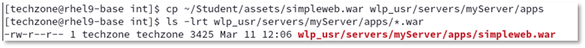
-
To define the application in the Liberty configuration file, take a look at the application configuration that has been provided as snippet.
cat ~/Student/assets/application-config.xml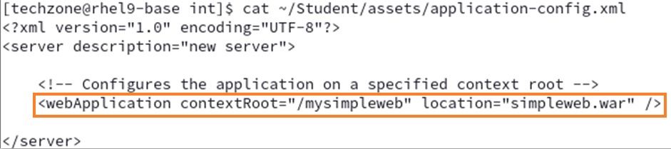
As you can see, a different context root has been defined.
-
You will add the webApplication element to the Liberty configuration by using the include concept. Review that the include element and the properties that have already been defined in the server.xml file.
cat wlp_usr/servers/myServer/server.xml | grep include
-
Copy the application-config.xml into the server directory.
cp ~/Student/assets/application-config.xml wlp_usr/servers/myServer ls -lrt wlp_usr/servers/myServer -
Switch back to the terminal window running tail. You can see that the application simpleweb gets deployed, this time with the context root mysimpleweb.

-
Finally test the application in the browser via URL http://localhost:9080/mysimpleweb/helloWorld.
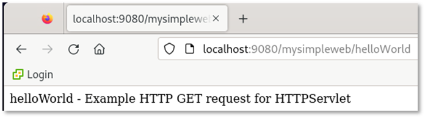
You have successfully deployed the web application into Liberty, first via dropins directory, then by adding it to the server.xml file via include.
4.8 Change logging and tracing by using ConfigDropins
Right now, you used the include concept to enhance the server.xml file with additional configuration files. Alternatively, you can specify additional configuration files in the configDropins directory without specifying include elements in the server.xml file. If you want to add configuration files to override anything in the erver.xml file of the server, create a configDropins/overrides directory.
In this case, you want to add/change the log level of the application server.
-
From the second terminal window, issue the following command to create a configDropins directory in the server directory.
mkdir -p wlp_usr/servers/myServer/configDropins/overridesAdd INFO logging output to console
Liberty provides the ability to set the logging level to any of the supported log levels defined in the documentation: https://www.ibm.com/docs/en/was-liberty/base?topic=liberty-logging-trace
- AUDIT logging enables logging of “Significant event affecting server state or resources”
- INFO logging enables of “General information outlining overall task progress”
By default, the Liberty Server has the console log level set to AUDIT.
In this section, you will change the level of log messages written to the console from AUDIT to INFO, which will result in additional logging messages. You will perform this activity not directly in the server.xml file but using the configDropins concept. Purpose is that you could change the log level easily on the fly and switch back to the previous level without having to manually edit a file.
Note:
It is also possible to set default logging options in the bootstrap.properties file.
If the logging options are set in the bootstrap.properties file, the logging options will take effect very early in server startup,
so it may be useful for debugging server initialization problems. -
Switch to the terminal currently running the tail on the file messages.log and press CTRL+C to stop it.
-
Review the current console logging and you can see that it only contains messages from type AUDIT.
tail -f wlp_usr/servers/myServer/logs/console.log
-
Switch to the second terminal window. Create a server configuration file to change the console log level to INFO via the following command:
echo ' <server> <logging consoleLogLevel="INFO"> </logging> </server> ' > wlp_usr/servers/myServer/configDropins/overrides/loglevel-config.xml
-
Switch to the terminal window running tail to verify, that the new file has been detected.
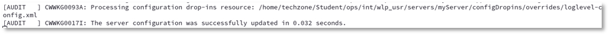
You will verify that messages of log level INFO will now be logged during the configuration of tracing.
Update trace specification
By default, the Liberty Server trace specification is set to "*=info=enabled".
To update the trace specification, you will again use the configDropings concept.
-
Switch to the second terminal window. Update the file configDropins/overrides/loglevel-config.xml to include a trace specification via the following command:
echo ' <server> <logging consoleLogLevel="INFO" traceSpecification="webcontainer=all=enabled"> </logging> </server> ' > wlp_usr/servers/myServer/configDropins/overrides/loglevel-config.xml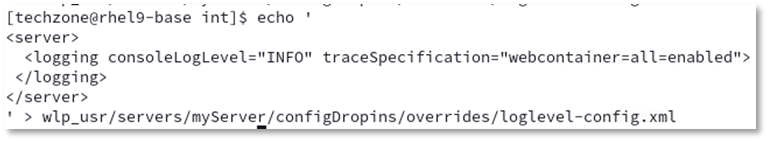
-
Switch to the terminal window running tail to verify, that the new file has been detected.
As you can see, messages of log level INFO are displayed now which means that the change of the consoleLogLevel has been picked up.
The message indicates as expected, that the trace level has been set to “webcontainer=all”. -
Switch to the second terminal window to verify that the trace has been created.
ls -lrt wlp_usr/servers/myServer/logs
-
Remove the file to set the trace level back to default.
rm wlp_usr/servers/myServer/configDropins/overrides/loglevel-config.xml -
Switch to the terminal window running tail to verify, that the new file has been detected.
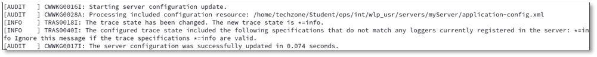
As you can see, the trace specification has been changed back to "*=info".
-
Press CTRL+C in the terminal window to stop the tail command.
-
Stop the Liberty instance using the following command:
wlp/bin/server stop myServer -
Delete the generated trace files by using the following command:
rm wlp_usr/servers/myServer/logs/trace*.logAs you have seen, the logging component can be controlled through the server configuration and it is quite convenient to enable and disable tracing using configDropins.
Configure logging in the bootstrap.properties file
Occasionally, you might need to configure trace to diagnose a problem that occurs before the server.xml file is processed. Or you want to change the log format to something other than basic. In this case, the equivalent configuration properties can be specified in the bootstrap.properties file.
If a configuration property is specified in both the bootstrap.properties file and the server.xml file, the value in bootstrap.properties is used until the server.xml file is processed. Then, the value in the server.xml file is used. Avoid specifying different values for the same configuration property in both the bootstrap.properties and the server.xml file.
You will now change the log format to json. As the bootstrap.properties file does not exist, you will simpoly create it.
-
Create a bootstrap,properties file that defines the property com.ibm.ws.logging.console.format by executing the following command:
echo 'com.ibm.ws.logging.console.format=json' > wlp_usr/servers/myServer/bootstrap.properties cat wlp_usr/servers/myServer/bootstrap.properties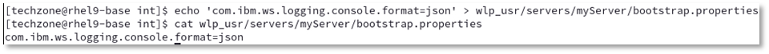
-
Start the server via server run and you can see that the log format has been set to JSON.
wlp/bin/server run myServer -
In the terminal window, press CTRL+C to stop the server.
-
Change the log format back to default by deleting bootstrap.properties, then run the server again.
rm wlp_usr/servers/myServer/bootstrap.properties wlp/bin/server run myServer
-
In the terminal, press CTRL+C to stop the server.
If you are interested into additional logging attributes, please take a look at: https://www.ibm.com/docs/en/was-liberty/base?topic=liberty-logging-trace
4.9 Review the Liberty configuration via Liberty REST APIs
If you use several includes or config dropins, you might run into the situation where you want to review the final setup. This can be done by using the restConnector APIs.
Configure the admin access to the Liberty instance.
-
First of all, you need a strong password as the APIs provide access to sensitive data which could help a hacker to manipulate the system. Use the securityUtility to create a secure password as LibertyIsGreat.
wlp/bin/securityUtility encode --encoding=aes LibertyIsGreat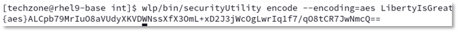
As before, the encoded password is not unique, so your output will likely look different that the one above. But both are valid.
-
Use the following commands to setup and configure the restConnector.
a. Update the user password in the following code snippet or keep the password as is.
echo ' <server> <featureManager> <feature>restConnector-2.0</feature> </featureManager> <quickStartSecurity userName="admin" userPassword="{aes}ALCpb79MrIuO8aVUdyXKVDWNssXfX3OmL+xD2J3jWcOgLwrIq1f7/qO8tCR7JwNmcQ==" /> </server> ' > wlp_usr/servers/myServer/configDropins/overrides/rest-config.xml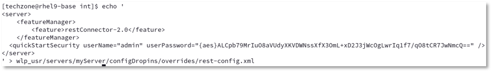
b. As the restConnector feature is not installed so far, switch to a terminal window to install the missing features via command:
wlp/bin/featureUtility installServerFeatures myServer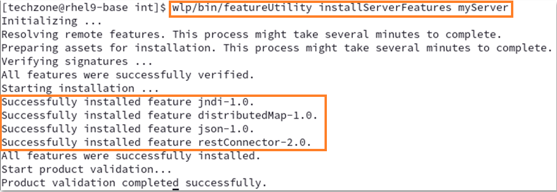
-
Start the Liberty instance by using the command:
wlp/bin/server start myServer -
From a browser window, access the Liberty REST APIs via the URL https://localhost:9443/ibm/api/config.
Enter Username/Password as: admin/LibertyIsGreat.
-
If asked, don’t save the password in the browser. Your browser should display something like this:

-
In the browser window, press CTRL+F and enter webapp to search for webapp. You should find the related settings.

-
Search for logging and you get all attributes currently used for logging.
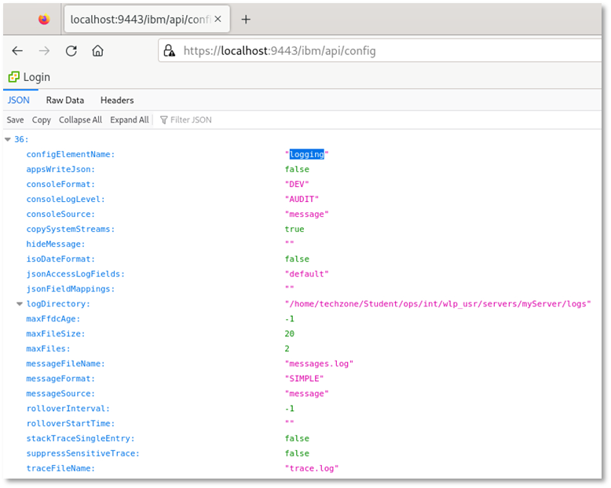
-
Finally stop the server and remove the restConnector configuration.
wlp/bin/server stop myServer rm wlp_usr/servers/myServer/configDropins/overrides/rest-config.xmlFor more details about the restConnector for administration, please take a look at: https://www.ibm.com/docs/en/was-liberty/base?topic=features-admin-rest-connector-20
4.10 Using the Liberty AdminCenter
The Liberty AdminCenter can be used to monitor the status of the Liberty server. You will define two users, an administrative user with the role admin and the second user with the role reader. Use again the securityUtility to create two secure passwords.
-
Create a password as Liberty4Admins for the admin user.
wlp/bin/securityUtility encode --encoding=xor Liberty4Admins
-
Create a password as Liberty4Readers for the second user.
wlp/bin/securityUtility encode --encoding=xor Liberty4Readers
-
Execute the following command to Configure the AdminCenter with the two users using the generated passwords generated before.
echo ' <server> <featureManager> <feature>adminCenter-1.0</feature> <feature>websocket-2.1</feature> </featureManager> <!-- Configure administrative roles. --> <basicRegistry realm="basicRealm"> <user name="admin" password="{xor}EzY9Oi0rJmseOzI2MSw=" /> <user name="reader" password="{xor}EzY9Oi0rJmsNOj47Oi0s" /> </basicRegistry> <!-- Assign 'admin' to Administrator --> <administrator-role> <user>admin</user> </administrator-role> <reader-role> <user>reader</user> </reader-role> </server> ' > wlp_usr/servers/myServer/configDropins/overrides/adminCenter-config.xml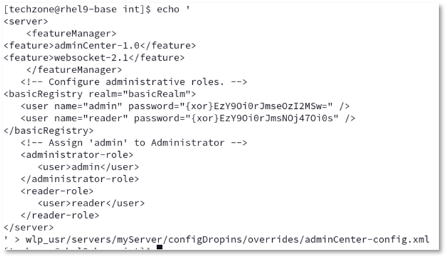
-
As the AdminCenter feature is not installed so far, switch to a terminal window to install the feature via command:
wlp/bin/featureUtility installServerFeatures myServer -
Start the server and take a look at the log:
wlp/bin/server start myServer tail -f wlp_usr/servers/myServer/logs/messages.log
As you can see, the AdminCenter feature adminCenter-1.0 has been enabled.
-
Access the Liberty Admin Center via URL https://localhost:9443/adminCenter, then enter the credentials for the admin user (admin/Liberty4Admins) and press Submit.
 The Admin Center Toolbox is displayed.
The Admin Center Toolbox is displayed. -
Click on Explore to explore the Liberty status, the applications as well monitoring data and configuration.
-
On the tab Overview take a look at the running servers and applications.

You would see more than one server if a collection would have been defined.
-
On the tab Applications you can see the running applications. As user with admin rights, you can use the menu to start, stop or restart an application.
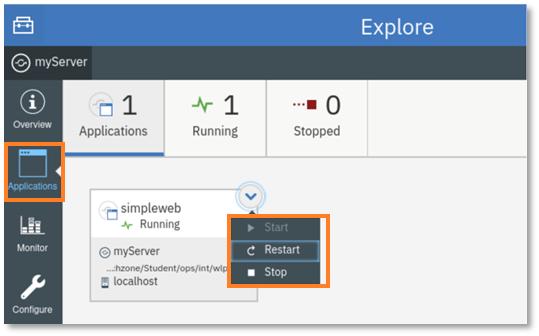
-
On the tab Montor, you can see basic performance data.

As you can see here, the Used Heap Memory max value above 1.9 MB which indicates that max heap has not been defined. You will change that in the next section of the lab.
-
On the tab Configure, you can see current configuration.
You can see a warning that remote file access is not configured. You can ignore that as you will not configure Liberty via AdminCenter.
But you could click on the link to see the configuration in design and source view. -
Select to log out as admin.
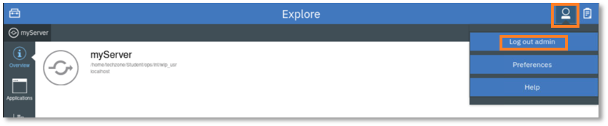
-
Log in as user reader with password Liberty4Readers.
-
Click on Explore, then select the tab Applications. Try to click on the twisty next to the simpleweb application and you can see that you are not auithorized to start or stop an application.
-
Select to log out as reader.
-
In the terminal window, press CRTL+C to stop the tail command.
-
Stop the Liberty server.
wlp/bin/server stop myServer
4.11 Customizing Liberty JVM Options
As you have seen in the Admin Center, the Liberty value for max heap is quite large which indicates that a limit has not been defined yet. This will be done as part of this section by defining Liberty JVM options.
The generic JVM arguments are used to configure and adjust how the JVM executes. Liberty is pre-configured with minimal settings defined. Custom generic JVM arguments such as heap settings for a Liberty server can be defined in the jvm.options file.
-
Create a jvm.options file with definitions for min and max heap by executing the following command:
echo ' -Xms25m -Xmx500m ' > wlp_usr/servers/myServer/jvm.options cat wlp_usr/servers/myServer/jvm.options -
Start the server with the updated JVM options.
wlp/bin/server start myServer -
Access the Liberty Admin Center again via URL https://localhost:9443/adminCenter. Log in as user reader with password Liberty4Readers.
-
Click on Explore, then select Monitor. Take a look at the dashboard and you can see that the Used Heap Memory Max is now 500 MB as defined in jvm.options.
-
Log out from admin center.
-
Stop the Liberty server using the following command:
wlp/bin/server stop myServerFor additional information around the Liberty Admin Center, take a look at: https://www.ibm.com/docs/en/was-liberty/base?topic=center-setting-up-admin
4.12 Recap
Let’s recap what you did in this part of the lab:
- installed a Liberty server using the Liberty kernel image.
- used Liberty environment variables to separate the Liberty configuration from the binaries.
- created a Liberty server instance and installed missing features.
- deployed a simple web application via dropins and via server.xml.
- configured logging via server.xml and server.env.
- changed the Liberty heap size via jvm.options.
- used the REST API to see the Liberty configuration.
- used Liberty Admin Center to see monitoring data and administer Liberty apps.
5 Lab Cleanup
-
Once you are done, make sure that Liberty and Visual Studio Code is not running.
-
Delete the Student folder via command:
rm -rf ~/Student -
Close the browser and all terminal windows
Summary
In this lab, you learned how to develop a simple application as a developer, how to deployment and configure the application as an configuration opertor, and how to install and configure Liberty as an administrator.
Congratulations!
You have successfully completed the lab Liberty Getting Started